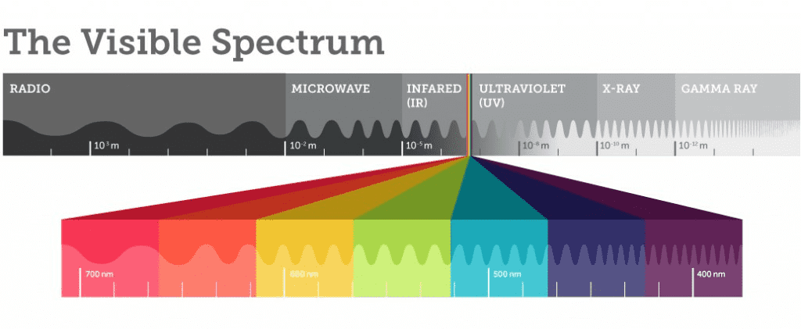
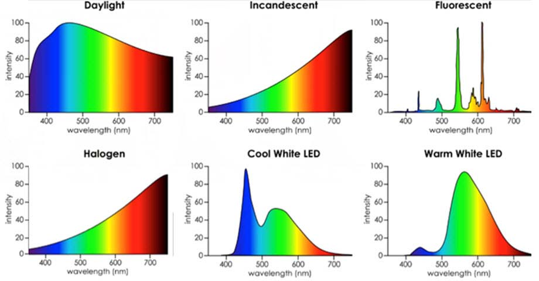
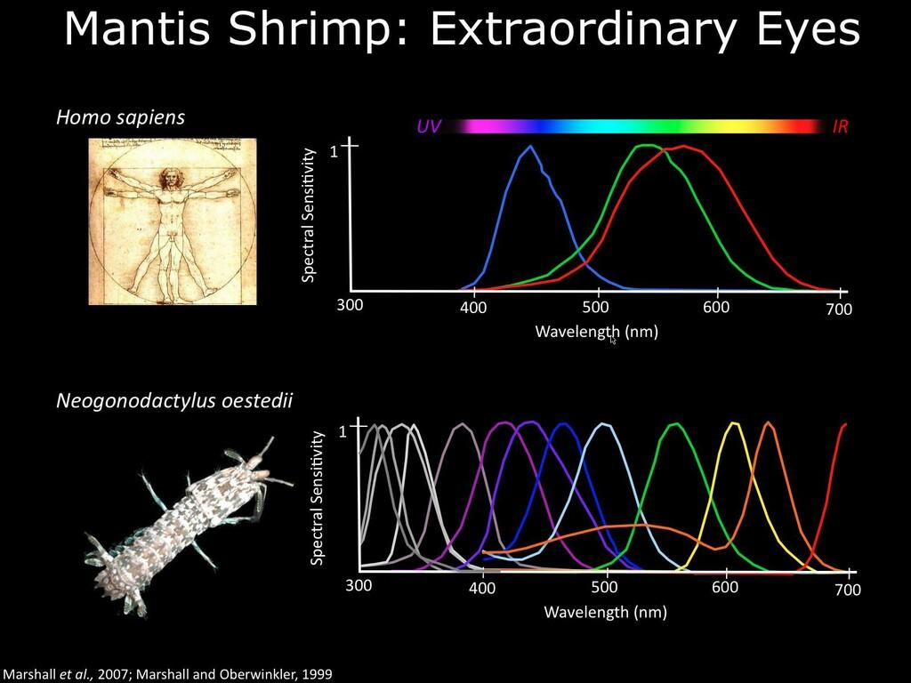
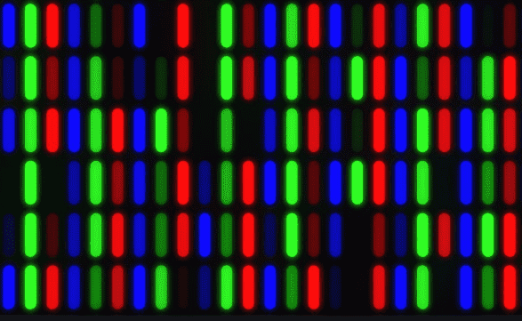
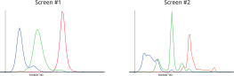
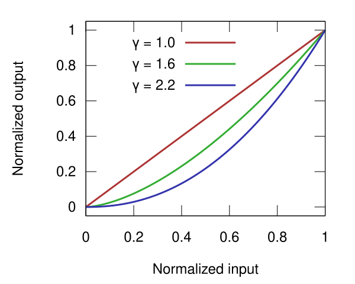
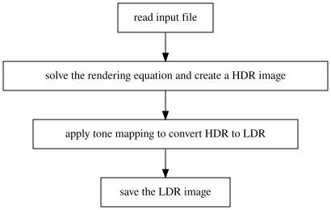
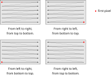

Lesson 2
Calcolo numerico per la generazione di immagini fotorealistiche
Maurizio Tomasi maurizio.tomasi@unimi.it
Previous Lesson
Radiance (flux \Phi in Watts normalized on the projected surface per unit solid angle): L = \frac{\mathrm{d}^2\Phi}{\mathrm{d}\Omega\,\mathrm{d}A^\perp} = \frac{\mathrm{d}^2\Phi}{\mathrm{d}\Omega\,\mathrm{d}A\,\cos\theta}, \qquad [L] = \mathrm{W}/\mathrm{m}^2/\mathrm{sr}.
Rendering equation: \begin{aligned} L(x \rightarrow \Theta) = &L_e(x \rightarrow \Theta) +\\ &\int_{\Omega_x} f_r(x, \Psi \rightarrow \Theta)\,L(x \leftarrow \Psi)\,\cos(N_x, \Psi)\,\mathrm{d}\omega_\Psi. \end{aligned}
Color Encoding
The quantities \Phi, L, etc. are all dependent on the wavelength \lambda (radiance → spectral radiance)
In numerical codes that simulate light propagation, we have to solve two problems:
A function f(\lambda) dependent on the wavelength has an infinite number of degrees of freedom: how to represent it numerically?
In our case, radiance is perceived as a color: but how do you specify a color when controlling a monitor or a printer?

Realistic Emissions
One number is not enough to encode a color: this is only true for an ideal black body (where temperature
Tis sufficient)!Emission spectra of real-world objects can be very complex (see previous lesson):

SPD
The term Spectral Power Distribution (SPD) is a generic term that indicates the functional form of a quantity dependent on λ: SPD of radiance, SPD of flux, SPD of emittance, etc.
The plots in the previous slide are in fact representations of different SPDs.
The visual perception of a color depends on the SPD of the irradiance that reaches the color-sensitive photoreceptors of the retina (cones).
Color Perception
There are two types of photoreceptors in the human eye:
Rods: photoreceptor cells highly sensitive to light intensity (~100 million per eye)
Cones: photoreceptor cells sensitive to the color of light (~5 million per eye)
Rods are not sensitive to SPD, and are used mainly in low light conditions.
Obviously, as today we are discussing colors, we are interested in cones!
Types of Cones
There are three types of cones:
- Type S (short): sensitive to blue
- Type M (medium): sensitive to green
- Type L (long): sensitive to red
There are many theories that explain how the brain combines the information from the three types of cones to represent a color.
In the animal world there is a lot of variety: the mantis shrimp has 12 types of cones!

Color Encoding
Tristimulus theory of color: it is always possible to encode the color of the signal S(\lambda) perceived by the human eye using three scalar quantities related to the responses B_S(\lambda), B_M(\lambda), and B_L(\lambda) of the cones:
\begin{aligned} s &= k \int_\lambda \mathrm{d}\lambda\,S(\lambda)\,B_S(\lambda),\\ m &= k \int_\lambda \mathrm{d}\lambda\,S(\lambda)\,B_M(\lambda),\\ l &= k \int_\lambda \mathrm{d}\lambda\,S(\lambda)\,B_L(\lambda). \end{aligned}
Metamerism
It is possible that two different signals S_1(\lambda) \not= S_2(\lambda) lead to the same triplet (s, m, l)
In this case, the perceived color for the two signals is indistinguishable to the human eye
The phenomenon is called metamerism, and the two colors associated with the radiation hitting the eye are said to be metameric
RGB Encoding
There are various color encodings, based on triplets of scalar quantities: XYZ, HSV, HSL, RGB…
Widely used encodings are RGB (monitors) and CYMK (printers)
In this course we will only deal with RGB encoding
RGB System
RGB encoding uses three scalar quantities to identify a color: red, green, blue (Red, Green, Blue).
Based on the additive synthesis of colors, which is perfect for monitors (printers use subtractive synthesis, and use CYMK encoding).
Linked to the operation of old cathode ray tube televisions and replicated on modern LED and LCD screens

RGB Emission
There are various types of screens (cathode ray tubes, LEDs, etc.), and the emission spectra of the three RGB channels can be different:

We will not spend too much time on this for time reasons.
RGB Colors
| Red | Green | Blue |
|---|---|---|
From L_\lambda to RGB
Rendering equation expressed for L_\lambda \begin{aligned} L_\lambda(x \rightarrow \Theta) = &L_{e,\lambda}(x \rightarrow \Theta) +\\ &\int_{\Omega_x} f_{r,\lambda}(x, \Psi \rightarrow \Theta)\,L_\lambda(x \leftarrow \Psi)\,\cos(N_x, \Psi)\,\mathrm{d}\omega_\Psi. \end{aligned}
We want to convert the equation in L_\lambda into three equations that provide R, G, B.
If f_{r,\lambda} = f_{r, X} is constant in the band X(\lambda), then
\begin{aligned} L_\lambda(x \rightarrow \Theta) = &L_{e,\lambda}(x \rightarrow \Theta) +\\ % I use \! here to insert some negative space &\int_{\Omega_x}\! f_{r,\lambda}(x, \Psi \rightarrow \Theta)\,L_\lambda(x \leftarrow \Psi)\,\cos(N_x, \Psi)\,\mathrm{d}\omega_\Psi\\ \int_0^\infty\!\!\!\!\!{} X(\lambda)\,L_\lambda(x \rightarrow \Theta)\,\mathrm{d}\lambda = &\int_0^\infty\!\!\!\!\!{} X(\lambda)\,L_{e,\lambda}(x \rightarrow \Theta)\,\mathrm{d}\lambda +\\ &\iint\!\!\mathrm{d}\lambda\,\mathrm{d}\omega_\Psi\,X(\lambda)\,L_\lambda(x \leftarrow \Psi) f_{r,X}(x, \Psi \rightarrow \Theta)\,\cos(N_x, \Psi)\\ L_X(x \rightarrow \Theta) = &L_{X,e}(x \rightarrow \Theta) +\\ &\int_{\Omega_x}\! f_{r,X}(x, \Psi \rightarrow \Theta)\,L_X(x \leftarrow \Psi)\,\cos(N_x, \Psi)\,\mathrm{d}\omega_\Psi. \end{aligned}
Rendering Equation
If we denote with R, G and B the integrated and converted radiance in the RGB system, the rendering equation translates into a system of three equations.
These can be rewritten as a “vector” equation on \vec c = (R, G, B): \begin{aligned} \vec c(x \rightarrow \Theta) = &\vec c_{e}(x \rightarrow \Theta) +\\ &\int_{\Omega_x} \vec f_r(x, \Psi \rightarrow \Theta)\otimes \vec c(x \leftarrow \Psi)\,\cos(N_x, \Psi)\,\mathrm{d}\omega_\Psi.\\ \end{aligned}
where \vec v \otimes \vec w indicates a “vector” given by the product of the components of \vec v and \vec w.
Display devices
How a monitor operates
A monitor can be considered a matrix of emitting points (pixels: picture element)
Each point is controlled by an RGB triplet of values
The possible values range in a limited interval
Realism in the emission of L by a monitor is therefore generally impossible
RGB Color Encoding
Today all monitors and graphics cards support the so-called “16 million color encoding”
An RGB triplet is encoded by a computer using three 8-bit integer values; for example, in C++ one could use a type like the following:
The total number of RGB combinations is 2^8 \times 2^8 \times 2^8 = 2^{24} = 16\,777\,216.
RGB Colors
| Red | Green | Blue |
|---|---|---|
Monitor Behavior
Monitor Non-Linearity
The power emitted by the points of a screen does not vary linearly.
The relationship between the requested emission level I and the flux \Phi actually emitted by a pixel is usually in the form \Phi = \Phi_0 + \bigl(\Phi_\text{max} - \Phi_0\bigr) \left(\frac{I}{I_\text{max}}\right)^\gamma\ \text{for R, G and B},
where I \in [0, I_\text{max}], and \gamma is a characteristic parameter of the device.
In modern monitors, of course I_\text{max} = 255, and I is an integer number.
Trend of \gamma

We assume here that \Phi_0 \approx 0.
Monitor calibration
\text{value} = \frac{\Phi}{\Phi_\text{max}} \stackrel{\Phi_0 \approx 0}{\approx} \left(\frac12\right)^\gamma \quad\Rightarrow\quad \gamma = \frac{\log 1/2}{\log(\text{value})}
Monitor calibration
Monitor Response
- Therefore, when we have a color expressed as an RGB triplet of real numbers, to display the color on a monitor it is necessary to perform the conversion using the \gamma factor
- The RGB color converted with \gamma is an “sRGB triplet”.
- The conversion is not linear, as is evident from its analytical expression
- What we have seen for the conversion L_\lambda \rightarrow (R, G, B) does not apply to sRGB: we cannot write the rendering equation directly in the sRGB space!
Conversion from RGB to sRGB
- A simple approximation for the conversion from RGB, (R, G, B), to sRGB, (r, g, b), is the following: \begin{aligned} r &= \left[k\,R^\gamma\right],\\ g &= \left[k\,G^\gamma\right],\\ b &= \left[k\,B^\gamma\right],\\ \end{aligned} where [\cdot] indicates rounding to integer, and k is a normalization constant.
- Determining a “good” value for k is critical!
Determination of k
- If the R, G and B values were in the range [0, 1], then it would be sufficient to set k = 255.
- But the range of possible values of R, G and B is [0, \infty):
- It depends on the unit of measurement used for L_\lambda;
- It depends on the scene
- There are some color standards (such as CIE XYZ) that set a reference normalization (standard color, black body temperature…)
- Let’s see now how to save images in a file
HDR and LDR Images
From RGB to sRGB
The most commonly used files for images (PNG, Jpeg, TIFF…) all use sRGB encoding
If we want our program to produce easy-to-use images, we must therefore convert the result of the rendering equation from RGB to sRGB.
Tone mapping is the process through which an RGB image is converted into an sRGB image, where by image we mean a matrix of RGB colors.
Image Types
There are two categories of images that are relevant for this course:
- LDR (Low-Dynamic Range) Images
- They encode colors using the sRGB system: the three components R, G, B are therefore integers, usually in the range 0–255. All the most common graphic formats (JPEG, PNG, GIF, etc.) belong to this type.
- HDR (High-Dynamic Range) Images
- They encode colors using the RGB or sRGB system, but the three components R, G, B are floating-point numbers and therefore cover a large dynamic range; to display them, it is therefore necessary to apply tone mapping. Examples of this format are OpenEXR and PFM.
How your code will work

Raster Image Encoding
Both LDR and HDR images are encoded by a color matrix; each color is usually an RGB triplet.
The file usually has this content:
- Header
- Specifies the image format, the matrix dimensions, and sometimes other useful parameters (e.g., the date and time of the shot, GPS coordinates, the \gamma value of the device that captured the image, etc.).
- Color Matrix
- The order in which rows/columns are saved, and also the order in which R, G, B components are saved (RGB/BGR) varies depending on the format.

Example: the PPM Format
LDR format, very common on Unix systems.
You can read and write it using NetPBM or ImageMagick. The second is the most common, and can be installed under Ubuntu with
$ sudo apt install imagemagickYou can convert images with the command
$ convert input.png output_p6.ppm # P6 Format $ convert input.jpg -compress none output_p3.ppm # P3 FormatPPM is a format designed to be written and read easily.
PPM File (P3)
A PPM file is a text file, openable with any editor.
Header:
- The two characters
P3; - Number of columns and rows, in text format and separated by a space;
- Maximum value for each of the R, G, B components (usually 255).
- The two characters
Color Matrix: the R, G, B triplets must be reported as integers starting from the top left corner to the bottom right, proceeding row by row.
Example (P3)
P3
3 2
255
255 0 0
0 255 0
0 0 255
255 255 0
255 255 255
0 0 0PFM Files
It is a type of file that is inspired by PPM, but it is an HDR format
Very important for this course!
It is not so well supported: under Ubuntu there is only
pftools, which is installed with$ sudo apt install pftoolsWe will write our own tools that will allow us to convert PFM files to PPM, so
pftoolswill not be necessary
Structure of a PFM File
Like PPM files in P6 format, PFM files are also partially text and partially binary.
Header:
- The two characters
PF, plus the character0x0a(newline); ncol nrows(columns and rows), followed by newline0x0a;- The value
-1.0, followed by0x0a.
- The two characters
Color Matrix: the R, G, B triplets must be written as sequences of 32-bit numbers (so not text!), from left to right and from bottom to top (different from PPM!).